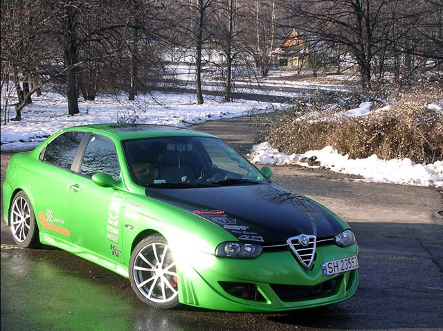
Adam - Poland
TURBO SOFT 0,4 Bar 176Bhp and 234Nm
ENGINE:
v
-Capacity 1,6 Twin Spark 120Bhp and 150Nm
-Turbocharger (Turbo Soft 0,4 Bar)
-Dump Valve
-BlowOff valve
-Intercooler
-Oilcooler
-FMU by Grabowski Powered
-Motul 4100 Power
-Turbo Boost gauge
-AFR gauge
-Exhaust gas temperature gauge
-silicone&aluminium air intake K&N
-Stanles steel performance exhaust 70mm by Grabowski Powered
-Real exhaust SUPERSPRINT EVO
EXTERIOR:
"Show and Shine"
-Green pearl ex touch gold (80% pearl)six layer
-Front hood black Pearl
-Full body kits As Design
-Front Bumper
-Rear Bumper
-Side Skirts
-Real Lip Spoiler
-FK Design Lighting
-Headlights clear black Design FK GTA Look(Xenon HID)
-Side indicator clear black FK
-Taillights Auto Delta GTA 3,7
-Electric Sunroof
-Tinited windows
INTERIOR:
-MOMO Alfa Romeo (Seats)
-A-pillar gauge pod’s-CARZONE specials
-OMORI METER(exhaust gas temperature gauge)
-A.Gauge Boost Meter
-AIR FUEL/RATIO gauge
-Switch(TOP GUN+LED)
-SHIFT LIGHT
BRAKES:
-Brake discs cross driled and slotted(front)
-Brake Calipers ATE(front)
-FERODO Brake fluid
-FERODO Brake pads(front&rear)
SUSPENSION:
-WEITEC Sport
-WEITEC Lower springs -35mm(front&rear)
-Front Strut TOWER BAR
WHEELS:
-Summer 17”rims TOORA T670 Chrome Look
-Tires Dunlop SP SPORT 9000 205/45 R17
-Winter 16”rims ALLESIO SUPER 205/55 R16
& TOYO TIRES S952 205/45 R17
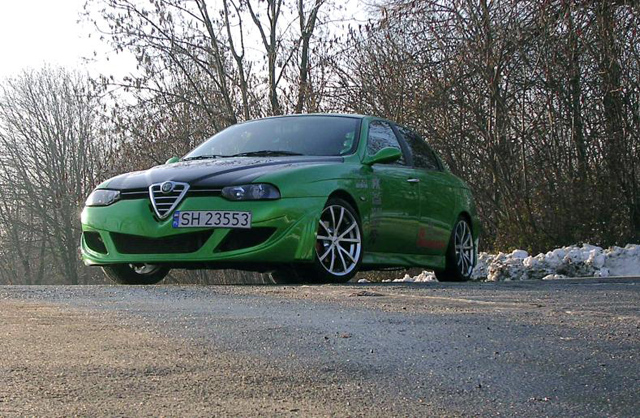
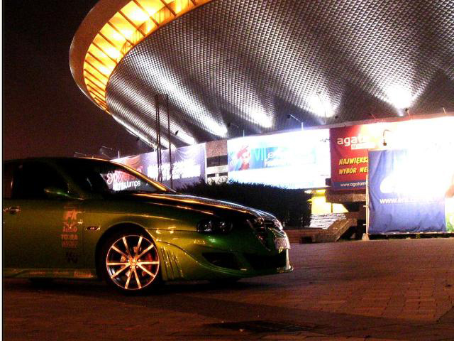
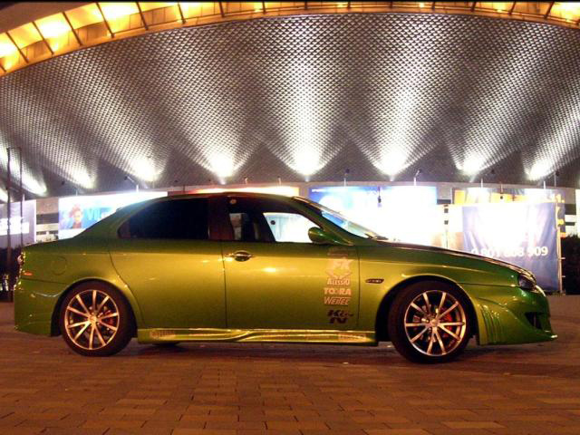
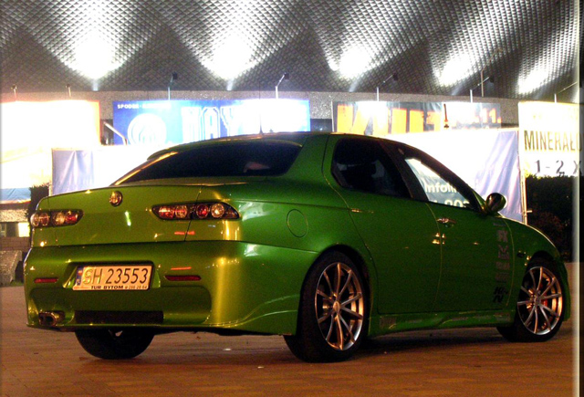
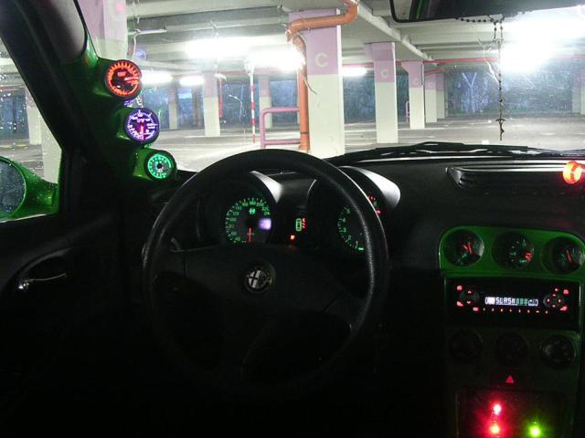
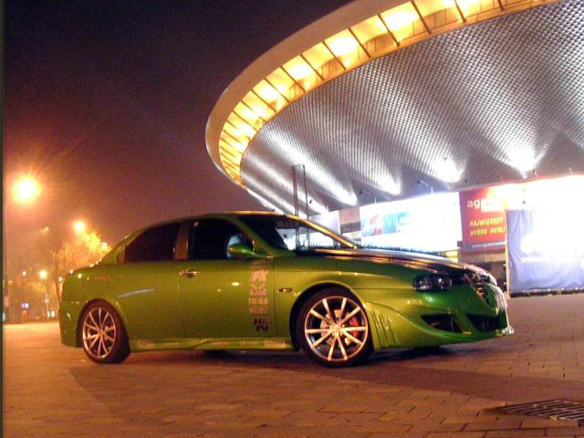
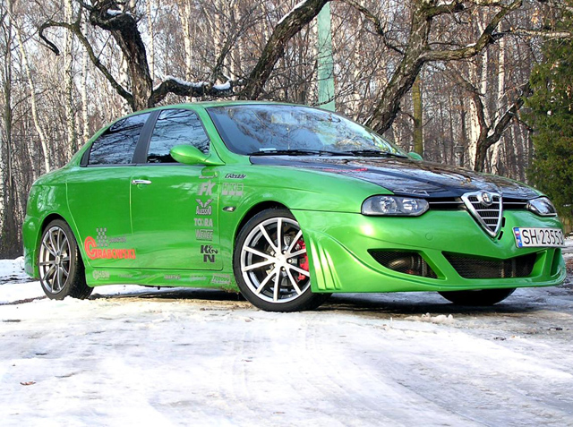
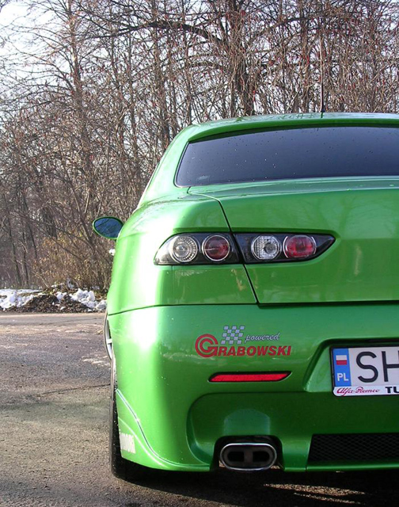
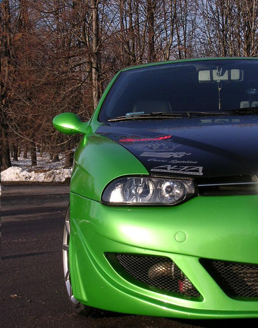
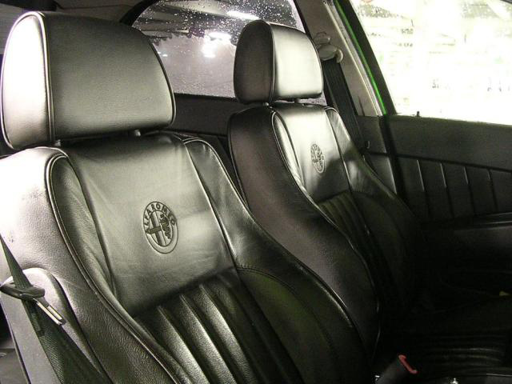
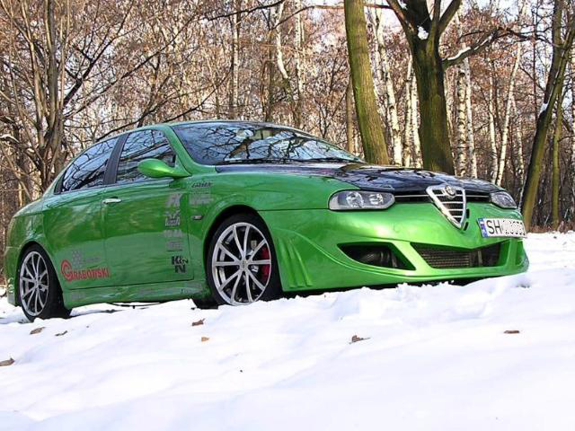
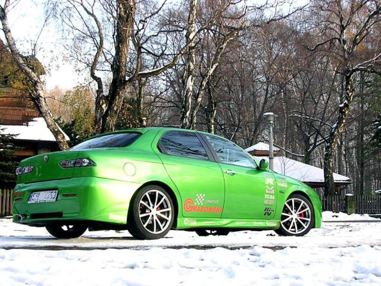
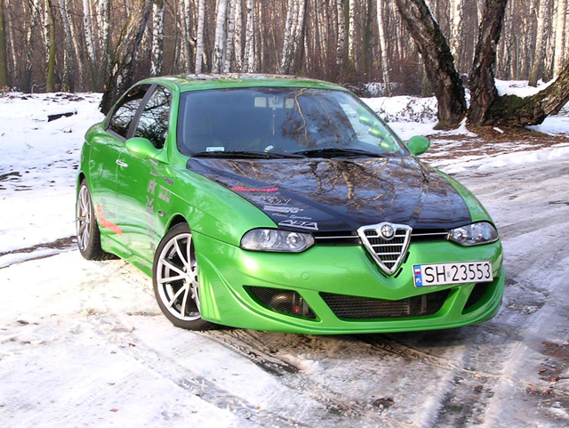
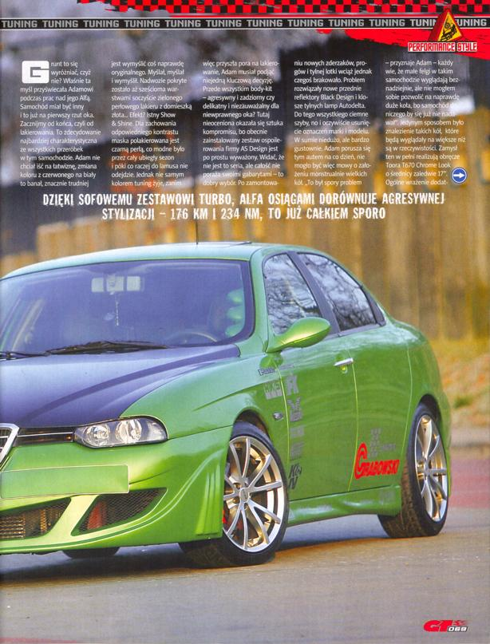
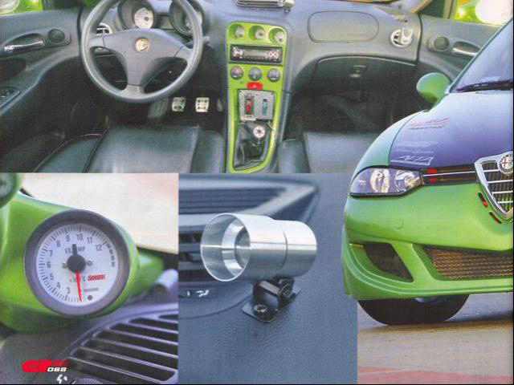
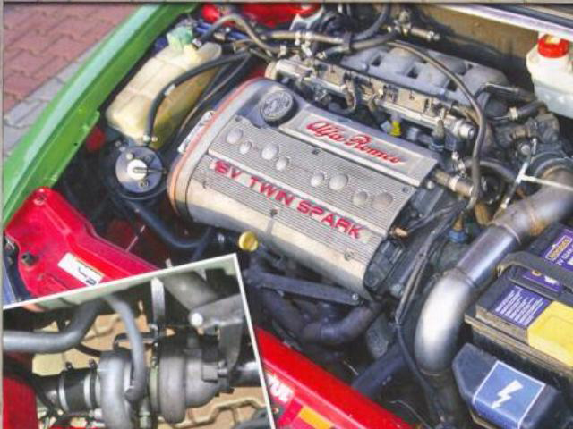
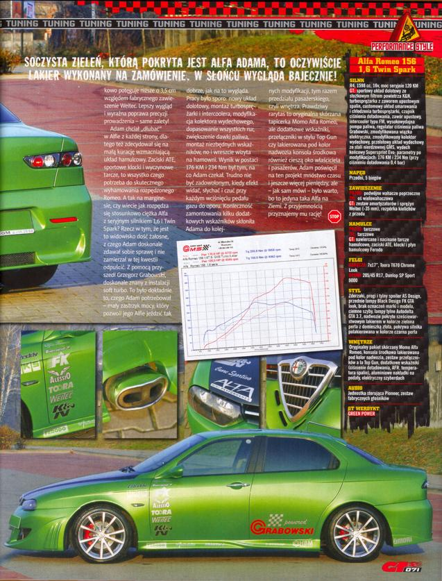
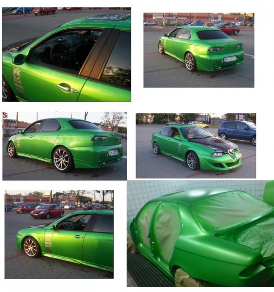
Submitted: 2008 - Feb
![[Prev]](bw_prev.gif)
![[Index]](bw_index.gif)
![[Next]](bw_next.gif)